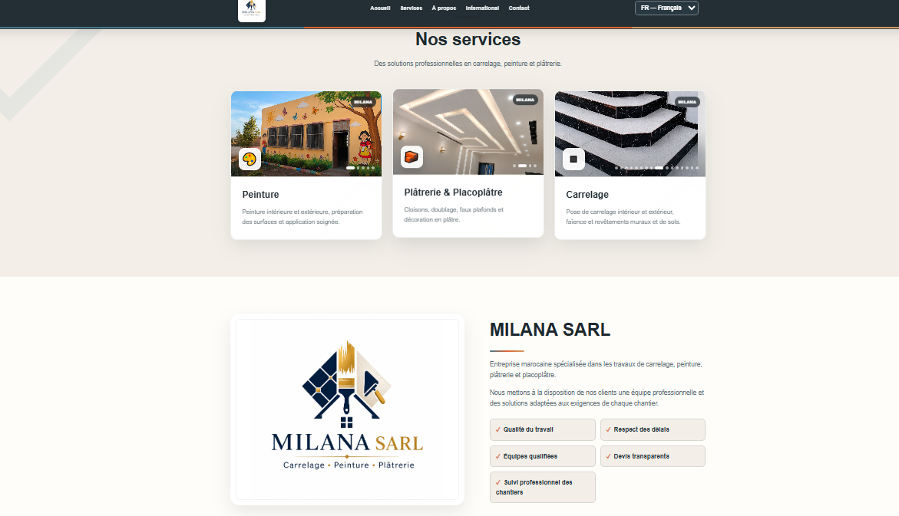

01 / Interactive map
Morocco Projects Map
An interactive way to discover and explore development projects across Morocco, complete with searchable locations and filters.
A curated collection of websites, interactive applications and digital projects. Each one starts with a problem worth solving.
An interactive way to discover and explore development projects across Morocco, complete with searchable locations and filters.

A corporate digital presence presenting construction, real estate and business services through clear, responsive layouts.

A practical browser-based toolkit designed to make common PDF document tasks simpler and more accessible.

A bilingual digital-services experience focused on presenting web, document and design solutions.

A reusable, responsive portfolio concept for showcasing skills, selected work and professional background.
Projects are independent examples of work. Availability of external websites may change.